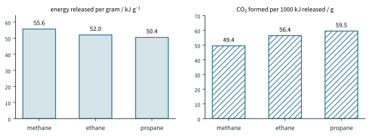
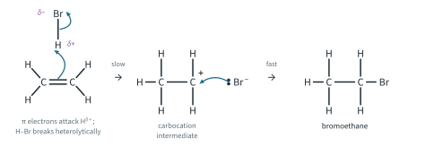
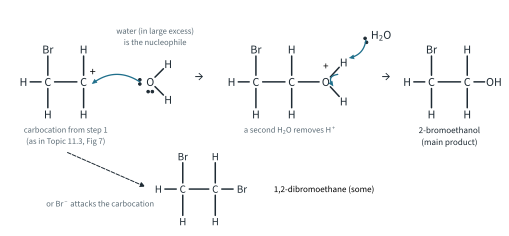
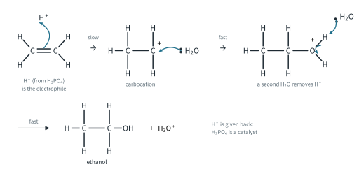
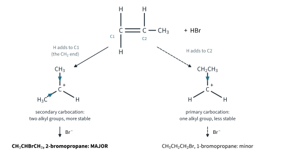
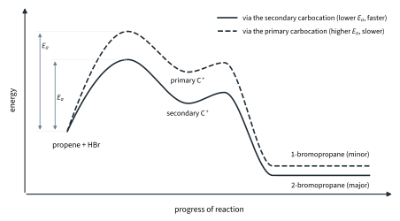
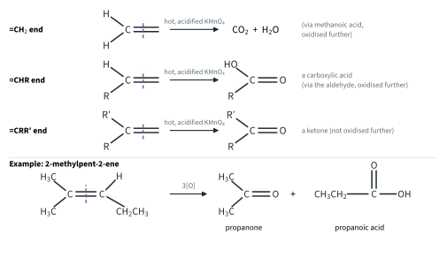
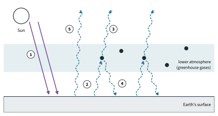

Hydrocarbons 1
Topic 11.4 · Hydrocarbons Part 1
On this page
Introduction
Hydrocarbons are compounds of carbon and hydrogen only. They are the simplest organic compounds, but they matter more than any others: most of them come from crude oil and natural gas, most of what we burn for energy is a hydrocarbon, and almost every other organic compound (plastics, medicines, solvents, dyes) is made, one way or another, from a hydrocarbon starting material. Most of the ethene made in the world, for example, is turned into poly(ethene) and other polymers (Topic 11.10).
This note covers 9476 Topic 11.4(a), (b), (c) and (h): the alkanes (with ethane as the example), the alkenes (with ethene), hydrocarbons as fuels, and what burning them does to the environment. Part 2 covers the arenes (benzene and methylbenzene). Everything here builds on Topic 11.3: the free-radical substitution mechanism (Fig 6 there), the electrophilic addition mechanism (Fig 7) and the order of carbocation stability (Fig 4). Look back at them when they are mentioned.
You will use these terms throughout the topic.
| Term | Meaning |
|---|---|
| Saturated | Contains only single C–C bonds, e.g. the alkanes, CnH2n+2. |
| Unsaturated | Contains at least one C=C (or C≡C) bond, e.g. the alkenes, CnH2n. |
| Complete combustion | Burning in excess oxygen, giving only CO2 and H2O. |
| Incomplete combustion | Burning in a limited supply of oxygen, giving CO and/or C (soot) as well. |
| Free-radical substitution | An H atom is replaced by another atom (here a halogen) in a chain reaction carried by free radicals (Topic 11.3). |
| Electrophilic addition | An electrophile adds across a C=C bond; the π bond breaks and two new σ bonds form (Topic 11.3). |
| Carbocation | An ion with a positively charged carbon atom (three bonds, six outer electrons): primary, secondary or tertiary. |
| Markovnikov's rule | Predicts the major product when HX adds to an unsymmetrical alkene (this Part). |
| Hydrogenation | Addition of hydrogen across a C=C bond, over a metal catalyst. A reduction. |
| Catalytic converter | A device in a car exhaust that removes CO, NO and unburnt hydrocarbons on a metal catalyst. |
| Enhanced greenhouse effect | The extra warming caused by the rise in greenhouse gases from human activity. |
Alkanes as fuels
Combustion of ethane
Alkanes are unreactive towards polar reagents (Topic 11.3), but they burn. In plenty of oxygen, the complete combustion of ethane gives carbon dioxide and water only:
C2H6(g) + 7/2 O2(g) → 2CO2(g) + 3H2O(l) ΔHc⦵ = −1560 kJ mol−1
(literature value, as in Topic 7). The general equation for any hydrocarbon, CxHy + (x + y/4)O2 → xCO2 + (y/2)H2O, and the gas-volume problems that use it are in Topic 6 Part 2. Combustion is strongly exothermic because the bonds formed, C=O in CO2 and O–H in water, are very strong (Topic 7 Part 2).
In a limited supply of oxygen, as in a badly tuned engine or a stove in a closed room, incomplete combustion gives carbon monoxide or even carbon (soot):
C2H6(g) + 5/2 O2(g) → 2CO(g) + 3H2O(l)
C2H6(g) + 3/2 O2(g) → 2C(s) + 3H2O(l)
Less energy is released, and carbon monoxide is poisonous (see the last section).
Hydrocarbons as fuels
Hydrocarbons make good fuels. Their combustion is very exothermic; the gases (methane, propane, butane) are easy to pipe or bottle and the liquids (petrol, diesel) easy to store and carry; and they burn cleanly when there is enough air. The drawbacks: they are non-renewable, every one of them gives CO2 when it burns (the enhanced greenhouse effect), and in engines they also give CO, oxides of nitrogen and unburnt hydrocarbons.
Worked example 1
Using ΔHc⦵ (literature values: CH4 −890, C2H6 −1560, C3H8 −2219 kJ mol−1), compare methane, ethane and propane as fuels: (a) the energy released per gram, (b) the mass of CO2 formed for every 1000 kJ released.
(To compare the fuels fairly, work out the CO2 given out for the same amount of energy, not for the same amount of fuel.) For propane, Mr = 3(12.0) + 8(1.0) = 44.0:
(a) energy per gram = 2219 / 44.0 = 50.4 kJ g−1
(b) 1000 kJ needs 1000 / 2219 = 0.4507 mol of propane, which gives 3 × 0.4507 = 1.352 mol CO2
mass of CO2 = 1.352 × 44.0 = 59.5 g
The same working for the other two gives the table and Fig 1.
| Fuel | ΔHc⦵ / kJ mol−1 | Mr | Energy per gram / kJ g−1 | CO2 per 1000 kJ / mol | CO2 per 1000 kJ / g |
|---|---|---|---|---|---|
| methane, CH4 | −890 | 16.0 | 55.6 | 1.12 | 49.4 |
| ethane, C2H6 | −1560 | 30.0 | 52.0 | 1.28 | 56.4 |
| propane, C3H8 | −2219 | 44.0 | 50.4 | 1.35 | 59.5 |

Free-radical substitution of ethane
Ethane reacts with chlorine or bromine in ultraviolet light (or sunlight) at room temperature. An H atom is replaced by a halogen atom:
CH3CH3 + Cl2 → CH3CH2Cl + HCl (UV light, room temperature)
CH3CH3 + Br2 → CH3CH2Br + HBr (UV light, room temperature)
The pale green-yellow colour of chlorine, or the red-brown colour of bromine, fades (slowly for bromine), and misty fumes of the hydrogen halide form in moist air. In the dark there is no reaction. The mechanism, free-radical substitution, is drawn with fish-hook arrows for chlorine in Fig 6 of Topic 11.3. For bromine the steps are the same:
- Initiation: Br2 → 2Br• (homolytic fission of the weakest bond, Br–Br 193 kJ mol−1, by UV light)
- Propagation: Br• + CH3CH3 → CH3CH2• + HBr, then CH3CH2• + Br2 → CH3CH2Br + Br•
- Termination: Br• + Br• → Br2; CH3CH2• + Br• → CH3CH2Br; 2CH3CH2• → CH3CH2CH2CH3
The radicals are not fussy. A Br• or Cl• radical can just as well remove an H atom from a molecule of the product, so further substitution happens, giving a mixture.
Worked example 2 (Further example): why bromine reacts more slowly
Use Data Booklet bond energies to find ΔH for each propagation step with chlorine and with bromine.
| Propagation step | Bond broken / kJ mol−1 | Bond formed / kJ mol−1 | ΔH / kJ mol−1 |
|---|---|---|---|
| Cl• + CH3CH3 → CH3CH2• + HCl | C–H 410 | H–Cl 431 | 410 − 431 = −21 |
| CH3CH2• + Cl2 → CH3CH2Cl + Cl• | Cl–Cl 244 | C–Cl 340 | 244 − 340 = −96 |
| Overall, chlorination | −117 | ||
| Br• + CH3CH3 → CH3CH2• + HBr | C–H 410 | H–Br 366 | 410 − 366 = +44 |
| CH3CH2• + Br2 → CH3CH2Br + Br• | Br–Br 193 | C–Br 280 | 193 − 280 = −87 |
| Overall, bromination | −43 |
(The −117 kJ mol−1 for chlorination is the same estimate as in the industry box of Topic 11.3.) The first propagation step is endothermic for bromine, so its activation energy must be at least 44 kJ mol−1. Each chain therefore turns over far more slowly, and the bromination of ethane is much slower than the chlorination.1 Notice that initiation does not decide this: Br–Br is actually easier to break than Cl–Cl.
Alkenes: why they add
An alkene has a C=C bond: one σ bond and one π bond (Topic 11.1). The π electrons lie above and below the plane of the molecule, exposed and further from the nuclei, and the π bond is weaker than a σ bond: C=C is 610 kJ mol−1, less than twice C–C (2 × 350 = 700 kJ mol−1, Data Booklet). So the C=C bond is a region of high electron density that attracts electrophiles. In an addition, the π bond breaks and two new σ bonds form, so the product is saturated.
Every addition in this Part except hydrogenation is an electrophilic addition, in two steps through a carbocation (Topic 11.3, Fig 7). Here is the whole of 9476 11.4(b)(i) for ethene on one page before the details:
| Reagent and conditions | Equation | Product | What you see |
|---|---|---|---|
| steam, H3PO4 catalyst | CH2=CH2(g) + H2O(g) ⇌ CH3CH2OH(g) | ethanol | (no visible change) |
| HBr(g), room temperature | CH2=CH2 + HBr → CH3CH2Br | bromoethane | (no visible change) |
| HCl(g), room temperature | CH2=CH2 + HCl → CH3CH2Cl | chloroethane | (no visible change) |
| Br2 in CCl4, room temperature, in the dark | CH2=CH2 + Br2 → CH2BrCH2Br | 1,2-dibromoethane | red-brown colour disappears |
| Cl2 in CCl4, room temperature, in the dark | CH2=CH2 + Cl2 → CH2ClCH2Cl | 1,2-dichloroethane | pale green-yellow colour fades |
| Br2(aq) (bromine water), room temperature | CH2=CH2 + Br2 + H2O → BrCH2CH2OH + HBr | 2-bromoethanol (and some 1,2-dibromoethane) | orange bromine water is decolourised |
Electrophilic addition of hydrogen halides
Ethene reacts with gaseous hydrogen bromide at room temperature to give bromoethane. The H–Br bond is polar, Hδ+–Brδ−, and the δ+ hydrogen is the electrophile (Fig 2).

- Step 1 (slow). The π electrons of the C=C bond attack the Hδ+ atom, forming a C–H bond. The H–Br bond breaks heterolytically, both electrons going to Br. A carbocation and a bromide ion form.
- Step 2 (fast). The bromide ion uses a lone pair to bond to the positive carbon.
Hydrogen chloride and hydrogen iodide add in the same way. The order of reactivity is HI > HBr > HCl, because the H–X bond, which has to break in the slow step, gets weaker down the group: H–Cl 431, H–Br 366, H–I 299 kJ mol−1 (Data Booklet). With an unsymmetrical alkene such as propene there are two possible products: see Markovnikov's rule, below.
Electrophilic addition of halogens
Bromine in tetrachloromethane
This is the reaction drawn in Fig 7 of Topic 11.3: ethene and bromine dissolved in CCl4, at room temperature in the dark, give 1,2-dibromoethane, and the red-brown colour of the bromine disappears. Chlorine adds in the same way, giving 1,2-dichloroethane, which is made on a huge scale: it is the first step to chloroethene and so to poly(chloroethene), PVC (Topic 11.10).
Bromine water
With bromine water, the main product is not 1,2-dibromoethane but 2-bromoethanol:
CH2=CH2 + Br2 + H2O → BrCH2CH2OH + HBr
Step 1 is the same as before: Brδ+ is attacked and a carbocation forms. But in step 2 the carbocation is surrounded by water molecules, which are present in huge excess, and a water molecule (a nucleophile, with lone pairs on its O) usually gets there before the bromide ion (Fig 3).

This is also evidence that the addition really happens in two steps. If ethene is bubbled into bromine water containing sodium chloride, 1-bromo-2-chloroethane forms as well, because Cl− ions also compete in step 2. But no 1,2-dichloroethane forms: the first atom to add is always Br, since Br2 is the only electrophile present. (Topic 11.3 has a footnote on what the intermediate really looks like.)
Addition of steam
Ethene and steam, passed over a catalyst of phosphoric(V) acid, H3PO4, give ethanol.2 This is how most industrial ethanol is made (fermentation is the other route, Topic 11.6 Part 1).
CH2=CH2(g) + H2O(g) ⇌ CH3CH2OH(g) (steam, H3PO4 catalyst)
The acid supplies H+, which is the electrophile (Fig 4). Water then attacks the carbocation, and the protonated alcohol loses H+, which regenerates the catalyst.

The reaction is reversible. It is exothermic (ΔH ≈ (610 + 460) − (350 + 410 + 360) = −50 kJ mol−1 from Data Booklet bond energies; about −45 kJ mol−1, literature) and two moles of gas become one. So, by Le Chatelier's Principle (Topic 9 Part 2), a high pressure and a lower temperature favour ethanol; but a low temperature is slow, so a compromise temperature is used. Only a small fraction of the ethene reacts on each pass over the catalyst, and the unreacted ethene is separated and recycled.
Markovnikov's rule
When HBr adds to ethene there is only one possible product, because the two carbons of the C=C are the same. Propene, CH3CH=CH2, is unsymmetrical: the H could go to either carbon of the double bond, so two products are possible, 1-bromopropane and 2-bromopropane. In fact a mixture forms, and one of them is the major product.
The rule is a summary; the reason is the carbocation. If the H adds to C1 (the CH2 end), the positive charge is left on C2, a secondary carbocation with two alkyl groups attached. If the H adds to C2, the positive charge is on C1, a primary carbocation with only one alkyl group (Fig 5).

Alkyl groups are electron-donating (the inductive effect, Topic 11.3 Fig 4). The more alkyl groups there are around the positive carbon, the more its charge is spread out, and the more stable the carbocation: tertiary > secondary > primary. A more stable carbocation is formed through a lower-energy transition state, so it has the lower activation energy and forms faster (Fig 6). Both carbocations form, but the secondary one forms much faster, so 2-bromopropane is the major product and 1-bromopropane the minor one.

Worked example 3
Predict the major and minor products when HBr adds to (a) but-1-ene, (b) 2-methylpropene, (c) but-2-ene.
(To answer, draw both possible carbocations first, then class each one.)
(a) CH3CH2CH=CH2: H to C1 gives CH3CH2C+HCH3 (secondary); H to C2 gives CH3CH2CH2CH2+ (primary). Major product 2-bromobutane, CH3CH2CHBrCH3; minor 1-bromobutane.
(b) (CH3)2C=CH2: H to the CH2 carbon gives (CH3)3C+ (tertiary, three alkyl groups); H to the other carbon gives (CH3)2CHCH2+ (primary). Major product 2-bromo-2-methylpropane, (CH3)3CBr; minor 1-bromo-2-methylpropane.
(c) CH3CH=CHCH3 is symmetrical: either way the carbocation is CH3CH2C+HCH3, so there is only one product, 2-bromobutane.
2-Bromobutane has a chiral centre (C2 carries H, Br, CH3 and C2H5), but the product is not optically active. The carbocation is planar, so Br− attacks from either face equally and the two enantiomers form in equal amounts: a racemic mixture (Topic 11.2; the same argument as for SN1 in Topic 11.3).
Further example. The same reasoning predicts the products of the other electrophilic additions. Propene and steam give mainly propan-2-ol (minor: propan-1-ol). With bromine water, the electrophile that adds first is Brδ+: it goes to the CH2 end, leaving the secondary carbocation, which water then attacks, so the main product is 1-bromopropan-2-ol, CH3CH(OH)CH2Br.
Hydrogenation
Hydrogen adds across a C=C bond when the alkene and hydrogen are heated with a finely divided nickel catalyst:
CH2=CH2(g) + H2(g) → CH3CH3(g) (H2(g), Ni catalyst, heat)
This is a reduction (gain of hydrogen) as well as an addition. ΔH is −124 kJ mol−1 from bond energies or −137 kJ mol−1 from enthalpy changes of combustion (Topic 7 Part 2). The catalyst is heterogeneous: the alkene and hydrogen are adsorbed onto the nickel surface, their bonds are weakened, and the product is desorbed (Topic 8 Part 2, Fig 8). Platinum and palladium catalysts work even at room temperature.
Every C=C in a molecule takes up one H2, so the volume of hydrogen absorbed tells you how many C=C bonds there are (Tutorial 1, Question 9). The best-known use is in making margarine: hydrogenating some of the C=C bonds in a liquid vegetable oil raises its melting point and turns it into a soft solid.
Oxidation of alkenes
Acidified or alkaline potassium manganate(VII) does not attack alkanes, but it oxidises alkenes. What you get depends on the conditions.
Cold, alkaline manganate(VII)
With cold, alkaline KMnO4, two –OH groups add across the double bond. Ethene gives ethane-1,2-diol:
CH2=CH2 + [O] + H2O → HOCH2CH2OH
([O] stands for oxygen from the oxidising agent.) The purple colour fades and a brown precipitate of manganese(IV) oxide, MnO2, forms, which makes this another test for a C=C bond. (Further example: the full ionic equation is 3CH2=CH2(g) + 2MnO4−(aq) + 4H2O(l) → 3HOCH2CH2OH(aq) + 2MnO2(s) + 2OH−(aq).) Propene gives propane-1,2-diol in the same way.
Hot, acidified manganate(VII)
Hot, acidified KMnO4 is much more vigorous: it breaks both bonds of the C=C, and the molecule falls into two pieces. Each carbon of the old double bond ends up as a C=O, and what happens next depends on what else is attached to that carbon.
The purple colour is decolourised (MnO4− is reduced to Mn2+), and if the alkene has a =CH2 end, CO2 is given off: effervescence, and the gas turns limewater milky. Fig 7 shows the rules and an example.

| Alkene | Equation | Products |
|---|---|---|
| ethene | CH2=CH2 + 6[O] → 2CO2 + 2H2O | carbon dioxide |
| propene | CH3CH=CH2 + 5[O] → CH3COOH + CO2 + H2O | ethanoic acid, CO2 |
| but-2-ene | CH3CH=CHCH3 + 4[O] → 2CH3COOH | ethanoic acid |
| 2-methylpropene | (CH3)2C=CH2 + 4[O] → (CH3)2CO + CO2 + H2O | propanone, CO2 |
| 2-methylbut-2-ene | (CH3)2C=CHCH3 + 3[O] → (CH3)2CO + CH3COOH | propanone, ethanoic acid |
Because the products show where the C=C was, this reaction is used to locate the double bonds in a larger molecule: identify the pieces, then put them back together.
Worked example 4
(a) An alkene A, C6H12, is heated with acidified KMnO4. The products are propanone and propanoic acid. Identify A. (b) An alkene B, C5H10, gives carbon dioxide and butanone. Identify B.
(Work backwards: put the two C=O carbons together and join them with a C=C.)
(a) Propanone is (CH3)2C=O and propanoic acid is CH3CH2COOH, which came from CH3CH2CH=. Joining the two carbons that became C=O: A is (CH3)2C=CHCH2CH3, 2-methylpent-2-ene (6 C, 12 H: it checks). It has no cis-trans isomers, because one alkene carbon carries two CH3 groups.
(b) CO2 came from a =CH2 end; butanone, CH3COCH2CH3, came from =C(CH3)CH2CH3. So B is CH2=C(CH3)CH2CH3, 2-methylbut-1-ene.
One thing this method cannot do is tell cis from trans: cis- and trans-but-2-ene both give two molecules of ethanoic acid. It locates the C=C, not its geometry.
Worked example 5 (Further example)
Predict the products of hot, acidified KMnO4 with (a) hexa-1,5-diene, CH2=CHCH2CH2CH=CH2; (b) 1-methylcyclohexene.
(a) Two C=C bonds, each at a chain end. Each =CH2 gives CO2; the middle piece, =CHCH2CH2CH=, becomes HOOCCH2CH2COOH, butanedioic acid. Products: 2CO2 + butanedioic acid.
(b) The C=C is in a ring, so cutting it opens the ring and gives one product containing both ends. The carbon carrying the CH3 becomes a ketone and the CH carbon becomes a carboxylic acid: CH3CO(CH2)4COOH, 6-oxoheptanoic acid. (Cyclohexene itself gives hexanedioic acid, HOOC(CH2)4COOH.)
Here is how to tell an alkene from an alkane, all at room temperature unless stated:
| Test | Alkene | Alkane |
|---|---|---|
| Br2(aq) (bromine water), in the dark | orange colour disappears | no change |
| Cold, alkaline KMnO4 | purple fades; brown precipitate of MnO2 | no change |
| Hot, acidified KMnO4 | purple decolourised; CO2 if there is a =CH2 end; the products locate the C=C | no change |
Hydrocarbons and the environment
Pollutants from car engines
Petrol and diesel are mixtures of hydrocarbons. In an internal combustion engine they burn very fast, at a very high temperature, in a limited time, and three kinds of pollutant leave in the exhaust:
| Pollutant | How it forms | Harm |
|---|---|---|
| Carbon monoxide, CO | Incomplete combustion: not enough O2, or not enough time, to oxidise all the carbon to CO2. | Toxic: it binds to the iron in haemoglobin more than 200 times as strongly as O2 (literature), so the blood carries less oxygen. |
| Oxides of nitrogen, NO and NO2 (NOx) | N2 and O2 from the air react at the very high temperature in the cylinder: N2(g) + O2(g) → 2NO(g), ΔH = +181 kJ mol−1 (literature). In the air, 2NO(g) + O2(g) → 2NO2(g). | NO2 irritates the lungs. It forms acid rain: 4NO2(g) + O2(g) + 2H2O(l) → 4HNO3(aq). With hydrocarbons in sunlight it forms photochemical smog. |
| Unburnt hydrocarbons | Fuel that escapes burning (incomplete combustion). | React with NOx in sunlight to form photochemical smog, which contains ground-level ozone, an irritant. Some, such as benzene, are carcinogenic. |
Why does nitrogen, which is so unreactive, react at all? The N≡N bond is very strong (944 kJ mol−1, Data Booklet) and the reaction is endothermic, so it only happens at the very high temperatures inside the engine.
The catalytic converter
A catalytic converter in the exhaust contains platinum, palladium and rhodium spread thinly over a ceramic honeycomb, which gives a very large surface area. How the reactions happen on the metal surface, and why lead compounds poison the catalyst, are in Topic 8 Part 2. The reactions that remove the three pollutants are (octane stands in for the unburnt hydrocarbons in the last one):
2CO(g) + 2NO(g) → 2CO2(g) + N2(g)
2CO(g) + O2(g) → 2CO2(g)
C8H18(g) + 25/2 O2(g) → 8CO2(g) + 9H2O(g)
The converter works only once it is hot, so most of the pollution from a short journey comes in the first few minutes. Notice what it does not do: every one of these reactions makes CO2. A catalytic converter does nothing for the greenhouse effect.
The enhanced greenhouse effect
Sunlight, mostly visible light, passes through the atmosphere and warms the Earth's surface. The warm surface gives off energy as infrared radiation. Some gases in the lower atmosphere, the greenhouse gases, absorb infrared and re-emit it in all directions, so part of it comes back down and warms the surface further (Fig 8).3 This natural greenhouse effect keeps the Earth about 30 °C warmer than it would otherwise be: without it, the oceans would freeze.

Human activity has raised the concentrations of these gases, so more infrared is trapped and the average temperature rises: this is the enhanced greenhouse effect, the cause of global warming and climate change. The main gases (literature values, approximate):
| Gas | Main human sources | Concentration then → now | GWP (CO2 = 1) |
|---|---|---|---|
| carbon dioxide, CO2 | burning fossil fuels; deforestation; cement making | about 280 → above 420 ppm | 1 |
| methane, CH4 | cattle; rice paddies; landfill sites; leaks of natural gas | about 0.7 → about 1.9 ppm | 28 |
| dinitrogen oxide, N2O | nitrogen fertilisers | about 0.27 → about 0.34 ppm | 265 |
| water vapour, H2O | not directly: its amount is set by the temperature, so warming adds more (a feedback) |
The global warming potential, GWP, compares how much warming a kilogram of each gas causes over 100 years with a kilogram of CO2 (IPCC AR5, 100-year values). Methane and N2O are present in far smaller amounts than CO2 but are much more powerful per kilogram. CO2 still causes most of the enhanced effect, because there is so much more of it and it stays in the atmosphere for a very long time. Worked example 1 showed why burning methane instead of other fuels helps a little; dissolved CO2 also acidifies the oceans (Topic 10 Part 2).
Summary
| Reaction | Reagents and conditions | Mechanism | Product (from ethane or ethene) |
|---|---|---|---|
| Combustion | excess O2; limited O2 | (none) | CO2 + H2O; CO or C + H2O |
| Halogenation of ethane | Cl2 or Br2, UV light, room temperature | free-radical substitution | chloroethane, bromoethane (and further substitution) |
| Hydration | steam, H3PO4 catalyst | electrophilic addition | ethanol |
| Hydrogen halides | HX(g), room temperature | electrophilic addition | halogenoethane (Markovnikov for unsymmetrical alkenes) |
| Halogens | X2 in CCl4, room temperature, in the dark | electrophilic addition | 1,2-dihalogenoethane |
| Bromine water | Br2(aq) (bromine water), room temperature | electrophilic addition | mainly 2-bromoethanol |
| Hydrogenation | H2(g), Ni catalyst, heat | addition (on the catalyst surface) | ethane |
| Mild oxidation | cold, alkaline KMnO4 | (not required) | ethane-1,2-diol |
| Cleavage | hot, acidified KMnO4 | (not required) | CO2, carboxylic acids or ketones, by the rules |
Additional information
- Beyond the syllabus: bromination is also more selective. Because the H-removing step is endothermic, Br• removes the more weakly held H atoms (on tertiary and secondary carbons) much more readily than primary ones, while Cl• removes almost any H. ↩
- The actual temperature and pressure used are not required by the 9476 syllabus. ↩
- Beyond the syllabus: a molecule absorbs infrared when one of its vibrations changes its dipole moment. N2 and O2, made of two identical atoms, cannot do this and are not greenhouse gases; CO2, CH4, N2O and H2O can. ↩